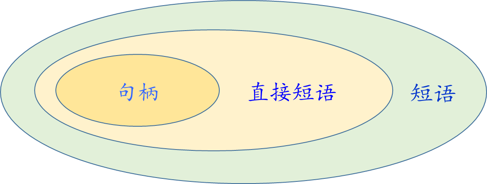
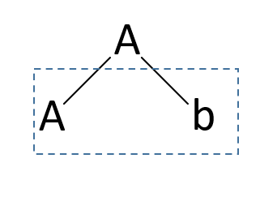

【预备】短语、直接短语、句柄短语短语：所有分析树子树的所有叶子（从左至右）令G是一个文法,S是文法的开始符号,假定αβδ是文法G的一个句型,如果有令 \mathrm{G} 是一个文法, \mathrm{S} 是文法的开始符号, 假定 \alpha \beta \delta 是文法 \mathrm{G} 的一个句型, 如果有令G是一个文法,S是文法的开始符号,假定αβδ是文法G的一个句型,如果有S⇒˙a Aδ 且 A⇒˙β\mathrm{S} \dot{\Rightarrow} a \mathrm{~A} \delta \text { 且 } \mathrm{A} \dot{\Rightarrow} \betaS⇒˙a Aδ 且 A⇒˙β则称β是句型αβδ相对于非终结符A的短语。则称 \beta 是句型 \alpha \beta \delta 相对于非终结符 A 的短语。则称β是句型αβδ相对于非终结符A的短语。直接短语直接断语：分析树中只有两层高度的子树所有的全部叶子对于短语，如果特别的有A⇒βA \Rightarrow \betaA⇒β则称β是句型αβδ相对于规则A→β的直接短语则称 \beta 是句型 \alpha \beta \delta 相对于规则 A \rightarrow \beta 的直接短语则称β是句型αβδ相对于规则A→β的直接短语句柄句柄